This is an update server for PIS-OS.
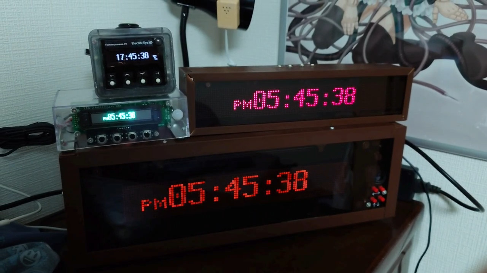build by akasaka, Apr 2024. Done on multiple breadboards with magnet wire. The original Orange Ticking Thing. Features: Plasma display (Morio Denki MD16101), motion sensor, light sensor.

WIP photos:
 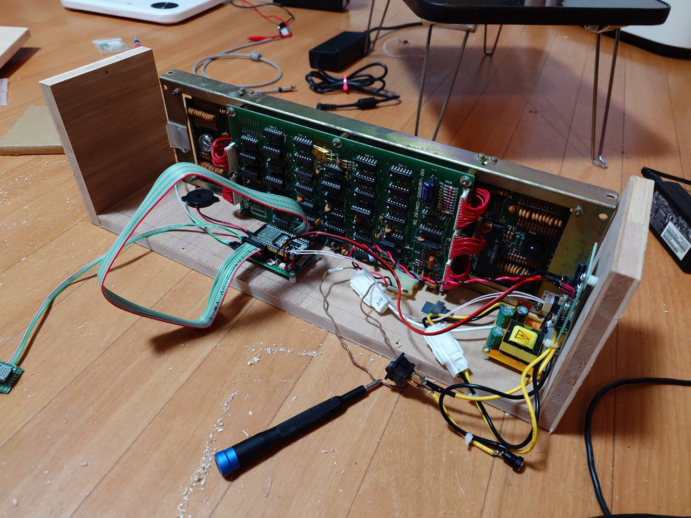
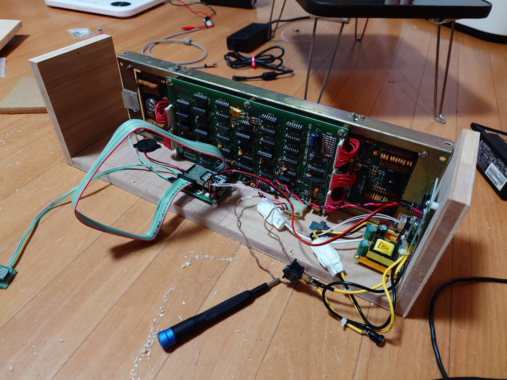
build by akasaka, Oct 2024. Uses uPIS-OS PCB rev1.0. Features: VFD display (112x16-GU7000), vibration speaker (Taptic Engine), motion sensor, light sensor, headpat.

 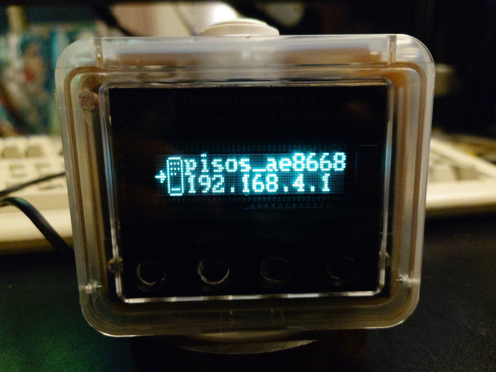
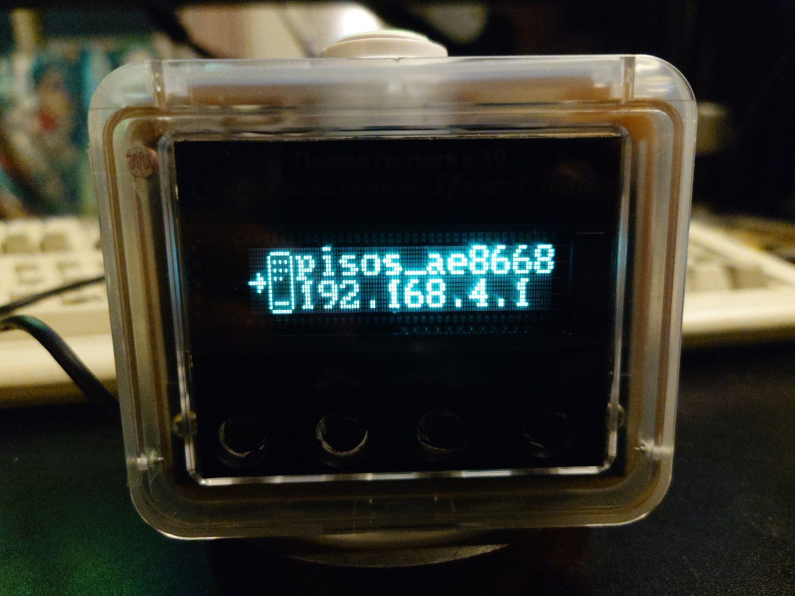
build by akasaka, Oct 2024. Main development machine, based around PCB rev1.0. Features: VFD display (140x16-GU7000), audio output port, motion sensor, light sensor, headpat.

build by akasaka, Nov 2024. Based around PCB rev1.0. Features: LED display using shift registers, big sperker, light sensor.
 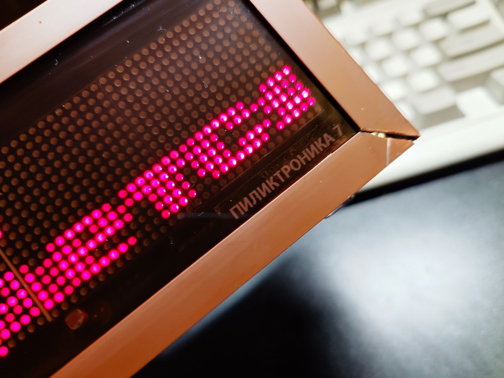
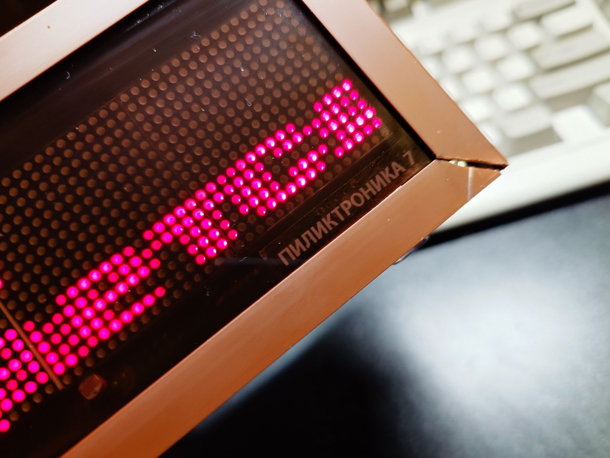
build by akasaka, Jul 2024. Breadboard + magnet wire. Features: OLED display (WS0010), audio output port, touchscreen (4 zones). Dismantled in Sep 2024.
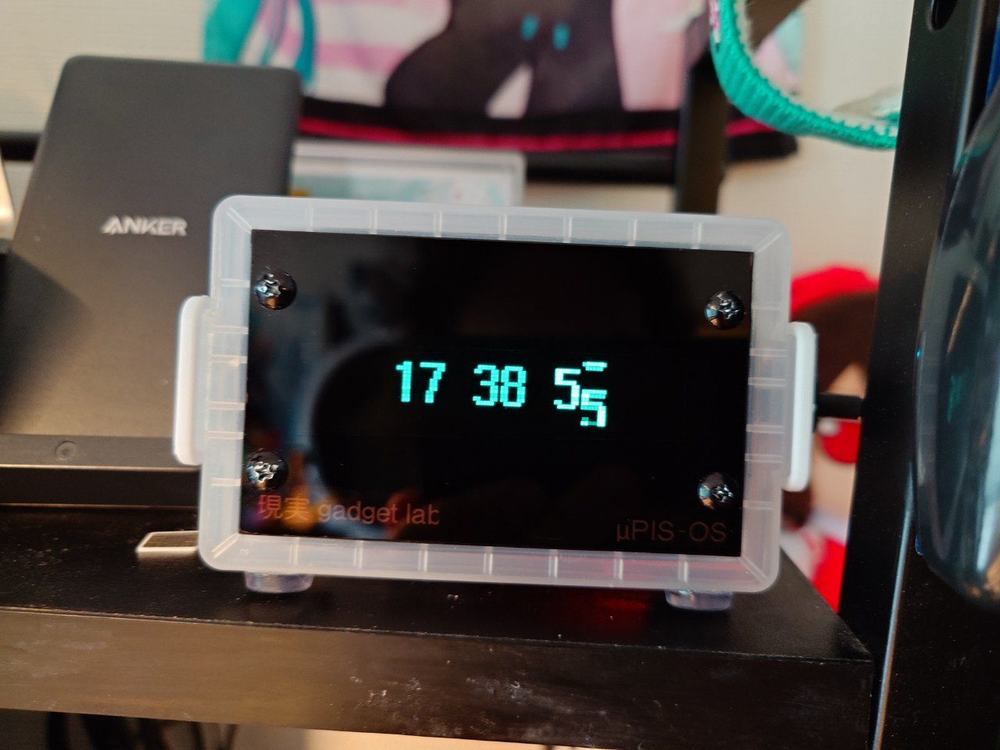build by akasaka, Sep-Nov 2024, total of 4 units. Identical to the NORITAKE_GU112 above, but uses a cheaper WS0010 OLED display instead.
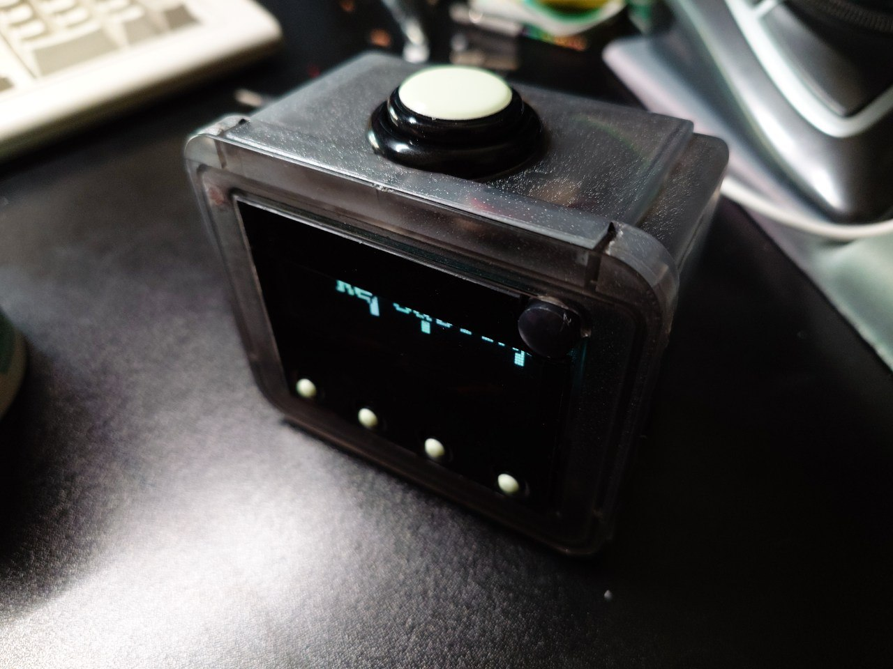

Yet another build by akasaka, Nov-Dec 2024. Based upon the Noritake Itron (ISE Electronics) GU192X16-505 automotive/bus billboard display. It arrived with the phosphor in surprisingly decent condition, probably was never used in the actual bus? No buttons 'cause I had no drill bits for steel, so it only has a light sensor, IR remote sensor and a motion sensor. It's also so enormous that an effort has been made to add split screen multitasking to run both the idle screen and the apps at the same time.
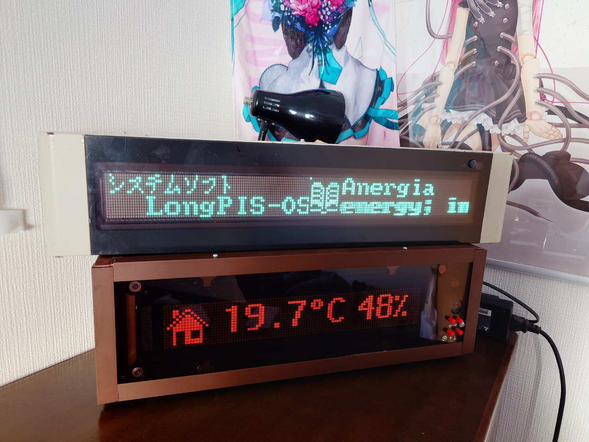 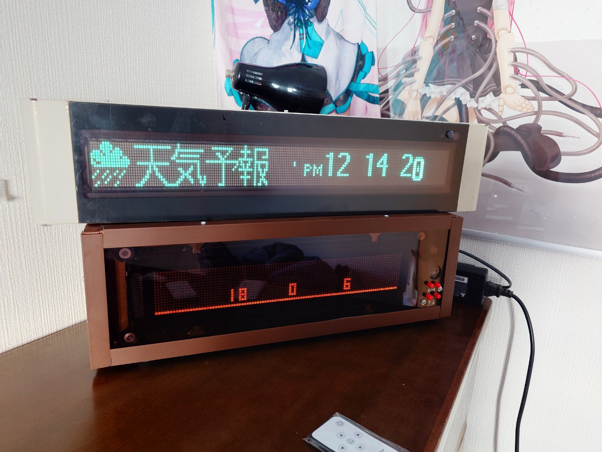 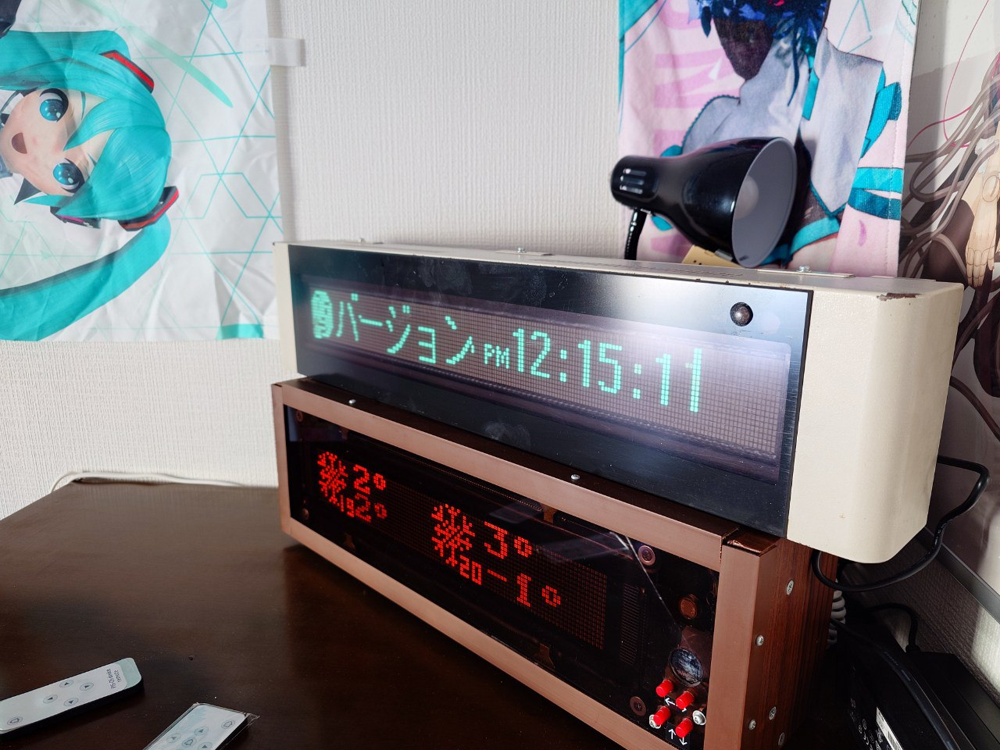 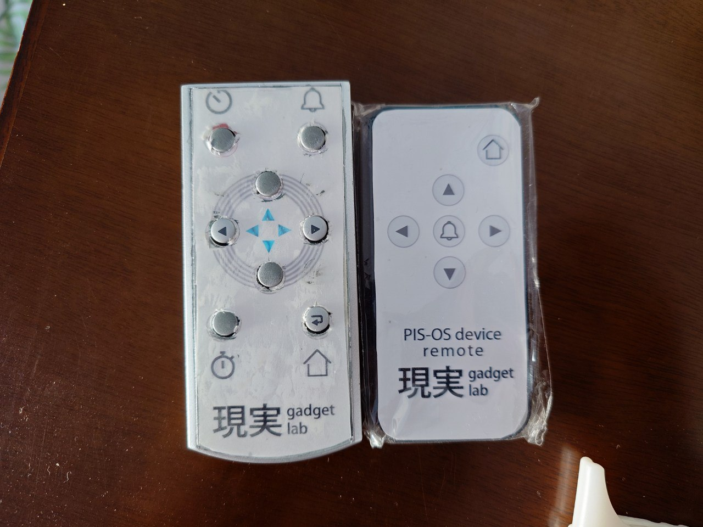